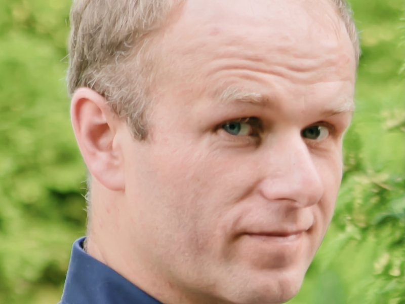
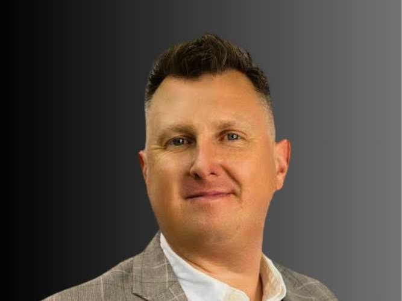
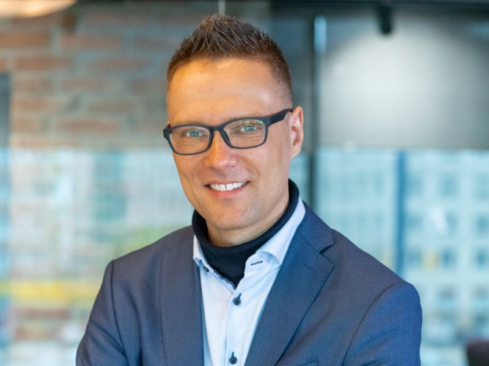
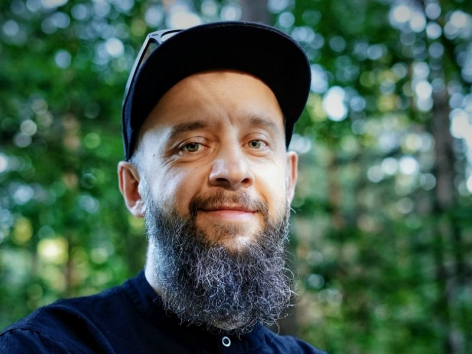

Harmonogram
| Godzina | Punkt programu | Prowadzący |
|---|---|---|
| 8:30 | Rejestracja | PMG |
| 9:00 | Oficjalne rozpoczęcie konferencji | PMG |
| 9:15 | „Project Manager – influencer zmiany” | Paweł Sawicki |
| 10:30 | „Zapomnij o wszystkim, czego się nauczyłeś na studiach. Oduczanie jako Twoja supermoc w zarządzaniu projektami” | Marcin Orocz |
| „Od strategii do codziennych działań: czego podejście Toyoty uczy o zarządzaniu zmianą” | Bartosz Misiurek + Wiktor Wołoszczuk | |
| „Dyrektywa NIS2 jako projekt zmiany w czasie transformacji energetycznej” | Paweł Sukiennik | |
| 12:15 | „21,5 miliona złotych i zero przychodów – jak zarządzać zmianą, kiedy kończy się paliwo” | Wojciech Buła |
| 13:15 | Poczęstunek w Kawiarence | PMG |
| 13:45 | Networking | PMG |
| 14:15 | „Zarządzanie zmianą w formie projektu: wyznaczenie i sterowanie zakresem zmiany” | Yevhen Khimichuk |
| „Zmiana 2.0 – Rapid Change Management z pomocą AI” | Marek Malinowski | |
| „Kapitał psychologiczny: ukryty zasób Project Managera” | Aleksandra Penza | |
| 16:00 | „Kim jestem tak naprawdę, czyli dlaczego ta zmiana znowu mnie przerosła?” | Andrzej Klose |
| 17:00 | Oficjalne zakończenie konferencji | PMG |
Prelegenci
O prelegencie
Lider transformacji technologicznej i operacyjnej łączący doświadczenie inżynieryjne i menedżerskie z umiejętnością budowania pozytywnej narracji zmiany. Przewodził strategicznym inicjatywom w finansach i przemyśle: od platform chmurowych i integracji danych dla bankowości, przez globalne programy transformacji cyfrowej w sektorze FMCG, po projekty R&D i produkcyjne dla BMW i Scanii oraz programy infrastrukturalne dla agencji bezpieczeństwa UE. Specjalizuje się w łączeniu strategii z delivery, pracy ze złożonymi grupami interesariuszy oraz przywództwie, które realnie uruchamia zmianę. Wykładowca Coventry University Wrocław, mentor i doradca liderów, ekspert NCBR. Laureat wyróżnienia „Business Tiger 2023” oraz nagrody Prezydenta Wrocławia za wkład w innowacje.
Związany z BPX S.A., globalną firmą konsultingową specjalizującą się w cyfrowej transformacji przedsiębiorstw oraz kompleksowym wsparciu IT.
Executive Transformation & Delivery Leader | BPX S.A.
Prelekcja: „Project Manager – influencer zmiany”
Prelekcja udowodni, że dzisiejszy Project Manager to nie tylko osoba od zarządzania, ale przede wszystkim kluczowy lider i influencer zmiany. Ponieważ aż 70% projektów upada z powodu braku aktywnego przywództwa w tym obszarze, umiejętność przekonywania innych staje się kluczowa. Podczas wystąpienia uczestnicy dowiedzą się, jak skutecznie wpływać na zespół bez formalnej władzy, wykorzystując potęgę storytellingu, empatię oraz mikroprzywództwo. Omówione zostaną również psychologiczne mechanizmy oporu wobec nowości, oparte na modelach ADKAR oraz krzywej Kübler-Ross. Całość pokaże, że projekty rzadko upadają przez braki w harmonogramach Gantta, a znacznie częściej po prostu przez brak zgody na samą zmianę.

O prelegencie
Doświadczony doradca biznesowy i konsultant ds. optymalizacji procesów, który przez ponad 15 lat pracował w różnych obszarach zarządzania, włączając w to zarządzanie IT, sprzedażą oraz omnichannel. Jego bogate doświadczenie obejmuje pełnienie funkcji w globalnych organizacjach oraz udział w cyfrowej transformacji firm. Marcin jest ekspertem w budowaniu skutecznych zespołów, kierowaniu zmianami i zarządzaniu wartością dla klienta. Jako mówca motywacyjny i konferansjer dzieli się swoją wiedzą i inspiruje innych do osiągania sukcesu.
Warsztat: „Zapomnij o wszystkim, czego się nauczyłeś na studiach. Oduczanie jako Twoja supermoc w zarządzaniu projektami”
Przychodzisz na studia po wiedzę, ale w zarządzaniu zmianą Twoim największym atutem będzie umiejętność... pozbywania się jej. Podczas gdy inni będą mówić o wykresach Gantta i mądrych definicjach, my pogadamy o tym, dlaczego Twoja piątka z „Teorii zarządzania” może być Twoim największym hamulcem w realnym projekcie. Pokażę Ci, jak oduczyć się akademickich schematów, zanim rynek zweryfikuje je za Ciebie.

Bartosz Misiurek
LinkedIn — Bartosz Misiurek (otwiera się w nowej karcie)Wspólny warsztat z Wiktorem Wołoszczukiem
O prelegencie
Od 2007 roku aktywnie rozwija program Training Within Industry (TWI) w Polsce, będąc jednym z jego głównych propagatorów i praktyków. Autor ponad 50 publikacji na temat TWI i Lean Management, wydanych w Polsce, Niemczech, Brazylii i Japonii, a także książki poświęconej integracji Lean i TWI w środowisku produkcyjnym wydanej w USA.
Od lat występuje jako prelegent na krajowych i międzynarodowych konferencjach, dzieląc się wiedzą zdobytą podczas ponad 300 warsztatów praktycznych, w których uczestniczyło kilka tysięcy osób. Pracował m.in. z takimi firmami jak Volvo, Electrolux, Philips, IKEA, Wedel, Heinz, Philip Morris, Tarczyński, Autoliv, Avio, BRW, BSH i Cooper Standard.
Pełnił funkcję TWI Global Coach w Cooper Standard Automotive, wspierając wdrożenia programu TWI w ponad 60 zakładach produkcyjnych na czterech kontynentach.
Doktor nauk technicznych – tytuł uzyskał na Politechnice Wrocławskiej, gdzie badał metody rozwoju kompetencji pracowników w środowisku przemysłowym.
Od listopada 2024 wykłada na Politechnice Wrocławskiej na Wydziale Zarządzania, gdzie pracuje jako adiunkt.
Rozwija temat Lean Blockchain, zajmując się połączeniem technologii blockchain, AI wraz ze szczupłym zarządzaniem.
Współtwórca największej w Polsce konferencji Lean oraz AI.
Prywatnie – tata trzech synów, pasjonat tenisa, biegania i sportów wytrzymałościowych. Ukończył wiele maratonów i półmaratonów w Polsce i za granicą.
Warsztat: „Od strategii do codziennych działań: czego podejście Toyoty uczy o zarządzaniu zmianą”
Ten warsztat koncentruje się na praktycznym przełożeniu strategii na codzienne działania w organizacji, w oparciu o podejście rozwijane w Toyota Motor Corporation. Uczestnicy poznają, jak wykorzystać Hoshin Kanri do skutecznego zarządzania zmianą – od zdefiniowania „prawdziwej północy” (True North), przez budowę spójnej wizji i misji, aż po kaskadowanie celów strategicznych na poziom roczny i operacyjny.
W trakcie warsztatu przepracujemy sposób formułowania celów, zadań, mierników oraz metod działania tak, aby tworzyły one logiczny i mierzalny system zarządzania. Szczególny nacisk położymy na to, jak zapewnić realne wdrożenie strategii – wykorzystując Toyota Kata jako mechanizm codziennego uczenia się, eksperymentowania i utrwalania zmiany w organizacji.
Efektem będzie zestaw konkretnych narzędzi i praktyk, które pomagają przejść od deklaracji strategicznych do trwałych rezultatów operacyjnych.
Wiktor Wołoszczuk
LinkedIn — Wiktor Wołoszczuk (otwiera się w nowej karcie)Wspólny warsztat z Bartoszem Misiurkiem
O prelegencie
Wiktor Wołoszczuk jest psychologiem z wykształcenia oraz doświadczonym konsultantem Lean Management, trenerem, coachem i mentorem kadry kierowniczej. Ukończył studia magisterskie na Wydziale Prawa i Administracji Uniwersytetu Wrocławskiego oraz psychologię na Uniwersytecie SWPS we Wrocławiu.
Posiada ponad 20 lat doświadczenia menedżerskiego na stanowisku dyrektora regionalnego w instytucjach finansowych, z udziałem w dużych projektach HR i zarządzania realizowanych wspólnie z BCG.
Specjalizuje się w rozwoju ludzi, liderów, zespołów i organizacji funkcjonujących w środowiskach VUCA. Ekspert psychologii relacji, zarządzania zmianą, budowania zaangażowania i kultury opartej na wartościach turkusowych.
Jako asesor AC i DC prowadzi szkolenia i oceny kompetencji, a także wykłada w Wyższej Szkole Bankowej we Wrocławiu – m.in. na temat relacji pracowniczych i przywództwa. Jest praktykiem Lean Management i programów TWI.
W LeanTrix zajmuje się wdrażaniem metodologii Toyota Kata i TWI, współrealizując programową linię wsparcia dla liderów i zmian operacyjnych.
Wiktor jest również współzałożycielem Kata School Poland – pierwszej oficjalnie działającej szkoły Kata w Polsce, tworząc forum praktyków doskonalenia codziennego i coachingu Kata oraz integrując lokalną społeczność Kata.
Dzięki wieloletniemu doświadczeniu operacyjnemu, psychologicznemu i trenerskiemu, łączy podejście analityczne z coachingiem ludzkiego potencjału – umożliwia liderom lepsze zrozumienie podejścia systemowego do rozwoju organizacji i budowania kultury ciągłego doskonalenia.
Warsztat: „Od strategii do codziennych działań: czego podejście Toyoty uczy o zarządzaniu zmianą”
Ten warsztat koncentruje się na praktycznym przełożeniu strategii na codzienne działania w organizacji, w oparciu o podejście rozwijane w Toyota Motor Corporation. Uczestnicy poznają, jak wykorzystać Hoshin Kanri do skutecznego zarządzania zmianą – od zdefiniowania „prawdziwej północy” (True North), przez budowę spójnej wizji i misji, aż po kaskadowanie celów strategicznych na poziom roczny i operacyjny.
W trakcie warsztatu przepracujemy sposób formułowania celów, zadań, mierników oraz metod działania tak, aby tworzyły one logiczny i mierzalny system zarządzania. Szczególny nacisk położymy na to, jak zapewnić realne wdrożenie strategii – wykorzystując Toyota Kata jako mechanizm codziennego uczenia się, eksperymentowania i utrwalania zmiany w organizacji.
Efektem będzie zestaw konkretnych narzędzi i praktyk, które pomagają przejść od deklaracji strategicznych do trwałych rezultatów operacyjnych.
Paweł Sukiennik
LinkedIn — Paweł Sukiennik (otwiera się w nowej karcie)O prelegencie
Dyrektor ds. Cyberbezpieczeństwa OT w Transition Technologies-Control Solutions odpowiedzialny za realizację projektów związanych z bezpieczeństwem systemów OT. Absolwent Wydziału Elektroniki na kierunku Automatyka i Robotyka na Politechnice Wrocławskiej. Członek stowarzyszenia w ISA oraz ISSA Polska. Certyfikowany specjalista w zakresie normy ISA/IEC 62443 dotyczącej bezpieczeństwa przemysłowych systemów automatyki i sterowania. Praktyk, posiadający 10-letni staż pracy jako integrator rozwiązań z zakresu automatyki przemysłowej oraz cyberbezpieczeństwa na wielu instalacjach infrastruktury krytycznej w Polsce i za granicą.
Prelekcja: „Dyrektywa NIS2 jako projekt zmiany w czasie transformacji energetycznej”
Transformacja energetyczna w Polsce — obejmująca nowe technologie, rozproszone źródła, cyfryzację i integrację IT/OT — diametralnie zmienia sposób funkcjonowania organizacji sektora energii, zwiększając ich złożoność i wrażliwość operacyjną. Wystąpienie pokazuje, jak wymagania NIS2 wpisują się w ten proces jako wymuszona, ale potrzebna zmiana organizacyjna, redefiniująca role, odpowiedzialności i sposób zarządzania ryzykiem w nowym krajobrazie energetycznym.

O prelegencie
Wojciech Buła, PhD, EMBA – z wykształcenia inżynier elektronik (Politechnika Wrocławska), z doktoratu nanotechnolog (MESA+ Institute for Nanotechnology, Uniwersytet Twente, NL), z praktyki konstruktor urządzeń analitycznych i medycznych, a z powołania – człowiek, który buduje rzeczy, których jeszcze nie ma, i czuje się w chaosie jak w domu. Przez 20 lat projektował mikroreaktory w Holandii, analizatory zanieczyszczeń wody w Hiroszimie, diagnostykę biomarkerów na platformie lab-on-a-chip do zastosowań domowych – zanim stało się to modne – w Tokio i San Francisco, nawiązując po drodze współpracę z ASICS i SpaceX – bo dlaczego nie testować zdrowia zarówno na maratonie, jak i w kosmosie? Po drodze przeszedł przez największy accelerator dla hardware’owych startupów HAX/SOSV na kampusie w Shenzhen, zebrał Gold Edison Award, wygrał CES Innovation Award i zdobył MBA w SGH z pierwszą lokatą — bo skoro już zmieniać branżę, to z przytupem (i dyplomem). Współzałożyciel dwóch (i pół, z tendencją rosnącą) startupów deep-tech, z których każdy nauczył go czegoś nowego o zarządzaniu zmianą — głównie tego, że teoria rzadko przeżywa kontakt z rzeczywistością. Na co dzień CTO Orthoget S.A., gdzie współtworzy implanty ortopedyczne do korekty wzrostu, partner w software house wprowadzający AI w procesy biznesowe, a w wolnych chwilach wykładowca SGH i członek rady programowej MBA for Startups, gdzie dzieli się ze studentami wiedzą, której sam nie miał, kiedy jej najbardziej potrzebował. Przeszedł drogę od naukowca, startupera, konsultanta do nauczyciela, świadomy, że najlepsze decyzje biznesowe podejmuje się zwykle z niepełną informacją i zimną kawą w ręku. Widział, jak nie działa akademia, nauka, startupy i wielkie korporacje przywiązane są do tego, jak się robiło rzeczy w przeszłości. Startupową krwią i potem zapłacił za zrozumienie, że jedyną stałą rzeczą w nowoczesnym świecie jest ciągła zmiana.
Prelekcja: „21,5 miliona złotych i zero przychodów – jak zarządzać zmianą, kiedy kończy się paliwo”
Każdy startup przeżywa moment, w którym wizja zderza się z rzeczywistością: budżet się kurczy, inwestorzy tracą cierpliwość, a produkt wciąż nie jest gotowy. Opowiem o zarządzaniu zmianą w warunkach ograniczonych zasobów – jak podejmować decyzje o pivotach, cięciach i przebudowie strategii, kiedy stawką jest przetrwanie firmy. O nocnych telefonach z inwestorami w trzech strefach czasowych, o prototypach, które nie przeszły testów dzień przed demo day, i o tym, jak wygląda poranna kawa, kiedy na koncie zostało na trzy miesiące. Konkretne przypadki z trzech startupów deep-tech – od diagnostyki medycznej po implanty ortopedyczne: co zadziałało, co nie, i czego nie uczą na studiach z zarządzania (ale powinni).
Yevhen Khimichuk
LinkedIn — Yevhen Khimichuk (otwiera się w nowej karcie)O prelegencie
Yevhen Khimichuk (po polsku Eugeniusz Chimiczuk) jest kierownikiem działu finansów oraz przewodniczącym komisji rewizyjnej IPMA Young Crew, absolwentem studiów podyplomowych „Zarządzanie projektami” na Politechnice Warszawskiej oraz magistrem stosunków międzynarodowych na Uczelni Łazarskiego. Jest wieloletnim analitykiem ds. bezpieczeństwa i obronności Klubu Jagiellońskiego (od 2016 roku), ze specjalizacją przemysł i technologie obronne, oraz wieloletnim pracownikiem międzynarodowych korporacji.
Warsztat: „Zarządzanie zmianą w formie projektu: wyznaczenie i sterowanie zakresem zmiany”
Warsztat obejmuje trzy części:
1) Zmiana jak projekt: zarządzanie zakresem zmiany w kontekście programu/portfelu. Ćwiczenie 1: brainstorming branż i sytuacji, w których uzasadnione jest wykorzystanie takiego modelu.
2) Przygotowanie się do zmiany: rozpoznanie biznesowe, zarys uzasadnienia biznesowego zmiany i wynikający z tego zakres zmiany.
3) Priorytetyzacja zmian – zarządzanie kaskadowe vs iteracyjne w zarządzaniu projektem. Przybliżenie zagadnienia zarządzania tolerancją w harmonogramie zmiany. Ćwiczenie 2: Przygotowanie kolejności zmian. Ćwiczenie 3: Przygotowanie harmonogramu projektu zmian i transformacji.

Marek Malinowski
LinkedIn — Marek Malinowski (otwiera się w nowej karcie)O prelegencie
Marek Malinowski – człowiek, który od blisko 20 lat działa w IT, a od kilku lat konsekwentnie próbuje przekonać świat, że technologia może być jednocześnie skuteczna i… ludzka. Na co dzień odpowiada za obszar innowacji, narzędzi i współpracy z vendorami w IT Operations & Support, gdzie łączy kropki między biznesem, technologią i zdrowym rozsądkiem (czasem w tej właśnie kolejności, czasem nie).
Specjalizuje się w usprawnianiu pracy zespołów, automatyzacji i wykorzystywaniu AI tam, gdzie naprawdę ma to sens – czyli nie „bo modne”, tylko „bo działa”. W swojej karierze prowadził inicjatywy, które realnie poprawiały efektywność zespołów, redukowały koszty i… ratowały sanity niejednego support engineera.
Po godzinach (a czasem i w godzinach) Marek zamienia się w warsztatowego ninja – prowadzi szkolenia z AI, Design Thinking, etyki technologii i szeroko pojętego „jak ogarnąć ten chaos wokół nas”. Na koncie ma setki przeszkolonych osób: od studentów, przez specjalistów, po liderów. Występował na konferencjach, prowadził warsztaty dla dzieci, młodzieży i dorosłych – czasem w jednej grupie (true story).
Lubi tłumaczyć skomplikowane rzeczy w prosty sposób, najlepiej z odrobiną humoru i przykładami, które zostają w głowie dłużej niż poniedziałkowe stand-upy. Wierzy, że AI nie zastąpi ludzi – ale może bardzo pomóc tym, którzy wiedzą, jak z niego korzystać.
Warsztat: „Zmiana 2.0 – Rapid Change Management z pomocą AI”
Czy zdarzyło Ci się kiedyś planować zmianę w organizacji tak długo, że w momencie wdrożenia świat wyglądał już zupełnie inaczej, a połowa zespołu zdążyła zapomnieć, o co w ogóle chodziło? Witaj w klubie. Tradycyjne zarządzanie zmianą bywa jak próba zawrócenia kontenerowca za pomocą wiosła – niby się da, ale pot i łzy są gwarantowane.
W 2026 roku nie mamy na to czasu. Na tym warsztacie odstawimy na boczny tor nudne wykłady i zajmiemy się konkretami. Pokażę Ci, jak zaprząc AI do roboty, której nikt nie lubi: mozolnej analizy interesariuszy, pisania dziesiątek komunikatów i przewidywania, kto tym razem powie, że stare było lepsze.
Co Cię czeka?
Zamiast teorii wrzucimy Cię na głęboką wodę w projekcie Aurora (nazwa może ulec zmianie :) ). To logistyczny koszmar, w którym autonomiczne roboty i agenci AI wywracają życie pracowników do góry nogami. Twoim zadaniem będzie uratować ten okręt, zanim zatonie w morzu oporu i frustracji.
Czego nie będzie?
Nie będziemy udawać, że AI rozwiąże za Ciebie konflikty przy ekspresie do kawy albo przytuli smutnego managera. Technologia zajmie się strukturą i danymi, żebyś Ty mógł w końcu zająć się ludźmi.
Dlaczego warto?
Bo wyjdziesz z gotowym zestawem narzędzi (promptów), które możesz przetestować w pracy już w poniedziałek rano. Dowiesz się, jak skrócić planowanie o 70 procent i jak sprawić, by komunikacja zmiany przestała brzmieć jak generowany przez bota korpo-bełkot, nawet jeśli... faktycznie wygenerował ją bot.
Przyjdź, jeśli chcesz dowiedzieć się, jak zostać architektem zmiany, który zamiast walczyć z wiatrakami, po prostu montuje na nich turbiny. AI nie zabierze Ci pracy, ale może sprawić, że w końcu zaczniesz ją lubić.
Aleksandra Penza
LinkedIn — Aleksandra Penza (otwiera się w nowej karcie)O prelegentce
Psycholożka biznesu, trenerka, wykładowczyni akademicka oraz badaczka specjalizująca się w obszarze psychologii pracy i organizacji.
Posiada bogate, ponad 18-letnie doświadczenie w obszarze HR, rekrutacji i rozwoju pracowników, pracując m.in. na stanowiskach HR Business Partnerka oraz Kierowniczka Sekcji Rozwoju zasobów ludzkich w dużych organizacjach.
Obecnie łączy praktykę z nauką, prowadząc wykłady na Uniwersytecie SWPS we Wrocławiu, gdzie dzieli się swoją wiedzą i doświadczeniem. Kontynuuje także działalność jako konsultantka, realizując projekty rozwojowe dla firm i pracowników, a także prowadząc badania naukowe, których celem jest lepsze zrozumienie mechanizmów zaangażowania w pracę.
Jej podejście opiera się na integracji wiedzy akademickiej z realiami biznesu, co pozwala na tworzenie skutecznych i opartych na dowodach rozwiązań dla organizacji.
Warsztat: „Kapitał psychologiczny: ukryty zasób Project Managera”
Projekty rzadko upadają przez błędy w harmonogramie – znacznie częściej ich sukces zależy od odporności psychicznej ludzi i ich gotowości na zmianę. Podczas spotkania przyjrzymy się kapitałowi psychologicznemu jako kluczowemu zasobowi, który pozwala liderom i zespołom zachować skuteczność oraz odporność w obliczu transformacyjnego chaosu. Pokażę, jak w oparciu o psychologię biznesu budować trwałe zaangażowanie i zarządzać „ludzką stroną projektu” tam, gdzie techniczne narzędzia przestają wystarczać.
O prelegencie
Przedsiębiorca, trener i coach biznesu, speaker.
Dyrektor zarządzający w Klose Brothers Polska, wykładowca PASB.
25+ lat doświadczenia zawodowego w tradycyjnych i nowoczesnych przedsiębiorstwach.
Wspiera organizacje w głębokich, zwinnych transformacjach.
Pomaga małym i średnim firmom zrozumieć wyzwania współczesnego biznesu i rozwijać się niezależnie od zewnętrznej koniunktury.
Twórca programu „Wewnętrzna Siła”, będącego inspiracją dla ludzi stojących na różnego rodzaju zakrętach życia i kariery.
Prelekcja: „Kim jestem tak naprawdę, czyli dlaczego ta zmiana znowu mnie przerosła?”
Ta prelekcja zamknie tegoroczną edycję Project Management Session. Przeznaczona tylko dla wytrwałych. Tych, co nie boją się zadać sobie ważnych pytań i mają w sobie odwagę wziąć los w swoje ręce – nawet tam, gdzie robi się naprawdę stromo.
Istnieją dziesiątki skutecznych metodologii, jak przechodzić przez zmianę i jak przeprowadzać przez nią innych. A jednak niezwykle trudno jest utrzymać dyscyplinę w zmianie – zwłaszcza wtedy, gdy perspektywa wyników jest bardzo odległa w czasie.
Sam nie mam patentu, jak uniknąć upadków i przejść przez zmianę suchą nogą. Zabiorę Cię za to w mój świat. Budowany przez długie lata na bardzo solidnych podstawach. I choć to nie ma prawa runąć, to jednak pewnego dnia budzisz się w środku niczego. I kiedy nie masz już prawie nic, zostaje Ci to, co najważniejsze – Ty, Twoje przekonania i ograniczenia. I to od nich zależy, czy zwycięży bezradność, czy zakiełkuje odwaga, by odbudować wszystko zupełnie inaczej.
Koniecznie miej ze sobą coś do pisania. Słowa, które zapiszesz, staną się Twoim GPS, na wypadek, gdyby wszystkie inne mapy i drogowskazy zawiodły.
Zapraszam Cię bardzo serdecznie!